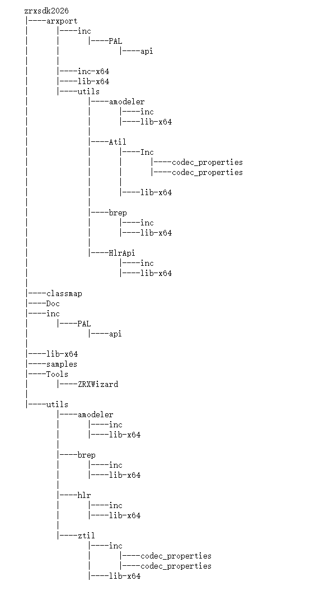
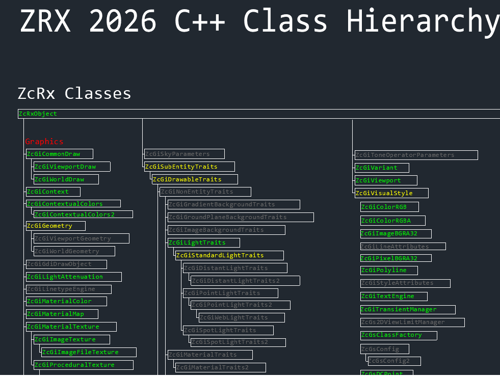
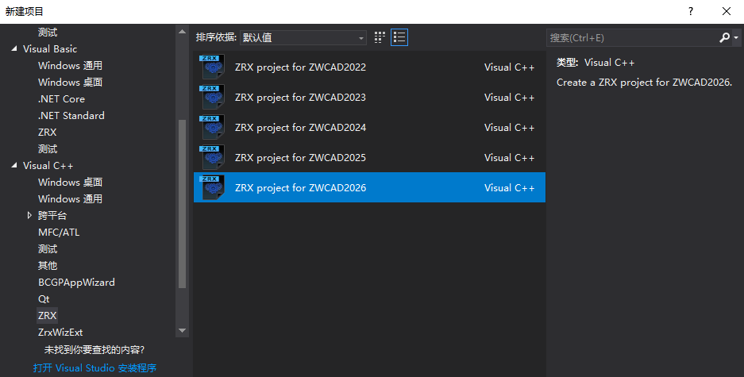
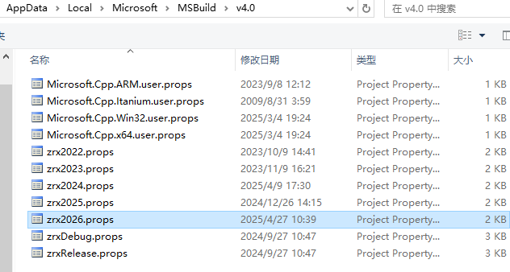

ZWSDK获取与安装
想要获取ZWSDK开发包，可以到ZWCAD官网下载开发包：中望官网下载到相应版本的SDK安装包后双击安装包进行安装(有些电脑环境较为复杂可能安装失败，建议用管理员权限安装)。
以下是安装SDK后目录介绍：
arxport:模拟了ARXSDK的文件结构，便于开发者从ZRX移植到ZRX，有经验的开发者完全可以按照ZRX的开发习惯进行工程配置。
classmap:包含一个DWG图形，其中显示了ZRX类层次的结构。
Doc:包含所有帮助文件。
inc:包含ZRX的头文件。
lib-x64:包含ZRX所有的库文件。
samples:包含了许多ZRX和NET应用程序的例子。
Tools:包含向导程序，安装sdk时默认安装，如果没向导有安装成功可以手动安装。
utils:包含扩展对象的应用程序，例如用于表示的Brep程序。

ZRX核心类库
ZcRx:实现应用程序绑定、运行时类注册与识别的类。
ZcEd:用于注册原生ZWCAD命令及响应ZWCAD事件通知的类。
ZcDb:ZWCAD数据库操作类。
ZcGi:实现ZWCAD实体图形渲染的绘图类。
ZcGe:包含线性代数和几何对象操作的通用工具类。
完整类层次结构图请参见ZRX安装目录classmap子文件夹中的classmap.dwg文件。

ZRXSDK其他介绍
1.安装ZWSDK后会在VS2017中安装一个向导，用于创建ZRX工程和NET工程。(注：如果VS版本不是2017，向导将安装失败)

2.安装ZWSDK后会%localappdata%\Microsoft\MSBuild\v4.0下放置相应的.props属性配置文件。
